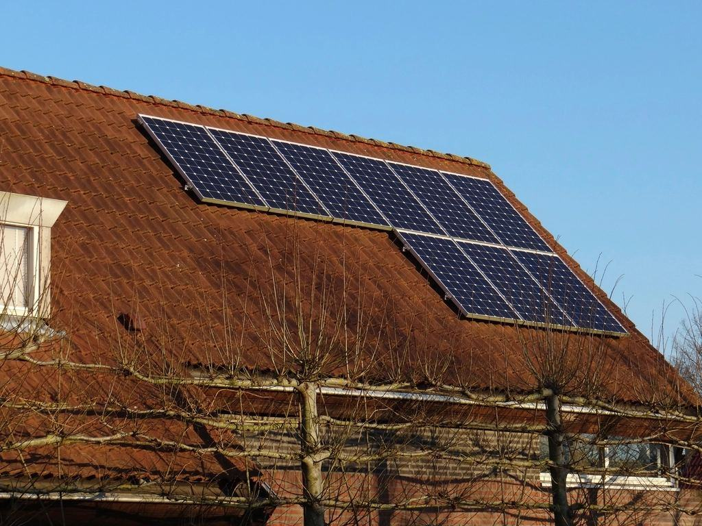

Vi tar hand om solceller andra lämnat
Har installatören gått i konkurs eller slutat svara? Vi felsöker, byter växelriktare och tar över garantiärenden i hela Skåne – oftast inom 48 timmar.
Senaste nytt

Kunder till den konkursade installatören får service till samma villkor.

Innan du ringer: så startar du om växelriktaren på rätt sätt.

Så skyddar du kablarna inför våren – och vad ett fågelnät kostar.
Skånes solcellsverkstad
Vad har hänt med anläggningen?

”Det finns tiotusentals anläggningar i Skåne där installatören inte längre svarar. Panelerna håller i 30 år. Någon måste finnas där i 30 år.”
Anläggningar som går igen
- Pågående

Övertagande Helsingborg
Serviceansvar för alla kunder efter en installatörs konkurs.
- Utfört

Söderslätts Grönsaker
Dygnetruntjour för ett packeri med kylrum och solceller på två hallar.
- Utfört

Villa i Staffanstorp
Anläggning från 2016 åter i drift samma dag, nu förberedd för batteri.
- Utfört

Lunds Studentbostäder
Drönarbesiktning som hittade 38 trasiga paneler på en förmiddag.
- Utfört

Gården i Skurup
Isolationsfel efter blixtnedslag – tre strängar lagade på en dag.
- Utfört

Husköp i Höllviken
Besiktning som sänkte köpeskillingen med 40 000 kronor.
Kunder som fick tillbaka sin el
”Displayen hade varit svart i tre månader och företaget som byggde den fanns inte längre. Växelverket kom på torsdagen och anläggningen gick igen samma eftermiddag.”
Tomas P. · Trelleborg”Jouren ringde oss innan vi själva hade märkt att en hall stod still. Det kallar jag service.”
Sanna och Ali R. · Höllviken”Besiktningen före husköpet hittade två trasiga paneler och en växelriktare på upphällningen.”
Serviceavtal med fast pris
Bas
För dig som vill veta att allt fungerar.
1 490 krper år, villa- Fjärrövervakning med larm
- Årlig fjärrkontroll
- Rapport varje januari
- 20 % rabatt på åtgärder
- Populärast
Trygg
Med besök och termografi vartannat år.
2 990 krper år, villa- Allt i Bas
- Platsbesök vartannat år
- Drönartermografi
- Felsökning ingår
Företag
För anläggningar över 100 kW.
fr. 14 000 krper år- Dygnetruntjour
- Tekniker inom 8 timmar
- Årlig termografi
- Kvartalsrapport
Priser inklusive moms. Privatpersoner får grönt avdrag på arbetskostnaden vid byte av utrustning.
Från felkod till full produktion
- 1

Ring eller skicka felkoden
Ta en bild på växelriktarens display. Med felkoden kan vi ofta säga vad som är fel redan i telefon.
- 2

Tekniker på plats
Inom 48 timmar kommer en tekniker med mätinstrument och de reservdelar som sannolikt behövs.
- 3

Åtgärd och fast pris
Du får pris innan vi byter något. 87 procent av felen löses vid första besöket.
- 4

Övervakning
Vi kopplar upp anläggningen så att vi ser nästa fel innan du gör det.
Felanmäl din anläggning
Skriv adress, märke på växelriktaren och felkoden. Bifoga gärna en bild på displayen.
- Telefon
- 070-174 06 42
- E-post
- service@vaxelverket.se
- Öppettider
- Mån–fre 07–17, jour dygnet runt för företagsavtal